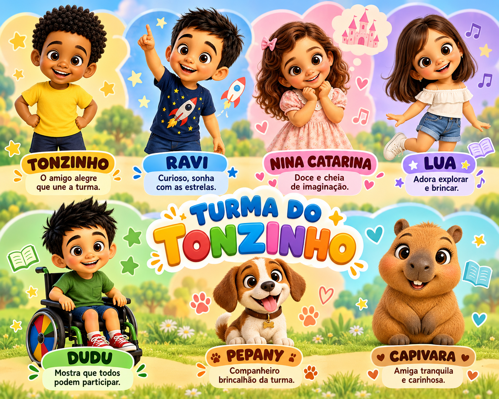
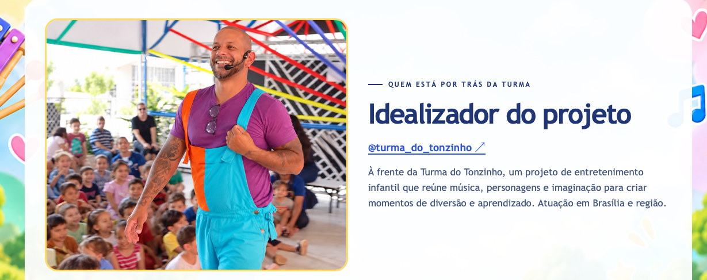

01 / FESTAS✳
Hoje é dia de
celebrar!
Festas de aniversário
O dia dos pequenos ganha música, brincadeiras e uma apresentação que convida todo mundo a participar.
Quero na minha festa ↗PEQUENOS MOMENTOS. GRANDES SORRISOS.
Música, brincadeiras e um mundo de imaginação. A Turma do Tonzinho leva a magia da infância para o seu evento.
Conheça nossas apresentações ↗
✦✧PRAZER, SOMOS A TURMA DO TONZINHO
Acreditamos na alegria de uma boa brincadeira, no encanto de uma história e na música que faz todo mundo cantar junto.
Nossas apresentações convidam as crianças a fazer parte do espetáculo, respeitando o jeito de cada uma e transformando o encontro em um momento especial.
UM CONVITE PARA A DIVERSÃO
Escolha o cenário.
A gente leva a imaginação.
Hoje é dia de
celebrar!
O dia dos pequenos ganha música, brincadeiras e uma apresentação que convida todo mundo a participar.
Quero na minha festa ↗Aprender também
é brincar.
Uma pausa cheia de descobertas, interação e histórias para tornar os encontros da escola ainda mais especiais.
Levar para a escola ↗A turma toda
se diverte!
Diversão para reunir as famílias em empresas, espaços de lazer e celebrações com os pequenos.
Planejar meu evento ↗
QUEM ESTÁ POR TRÁS DA TURMA
Idealizador do projeto · Músico e compositor.
Formado em Letras e Filosofia.
À frente da Turma do Tonzinho, um projeto de entretenimento infantil que reúne música, personagens e imaginação para criar momentos de diversão e aprendizado.
Com apresentações em Brasília e região, cada encontro é feito para acolher, brincar e deixar memórias boas.
DO PRIMEIRO OI AO ÚLTIMO APLAUSO
Qual é a ocasião, a data e onde a diversão vai acontecer?
Conversamos sobre a faixa etária, o espaço e o formato da apresentação.
Com tudo combinado, é só preparar os sorrisos e deixar a imaginação entrar.
VAMOS CRIAR ESSA MEMÓRIA?
Conte um pouquinho do que você está imaginando e prepare os detalhes para conversar com a nossa turma.
✳ANTES DE ABRIR AS CORTINAS
O ponto de partida é a idade das crianças, o tipo de evento e o espaço disponível. Esses detalhes ajudam a conversar sobre o formato mais adequado.
Separe a data, a cidade, o local, a faixa etária e a quantidade estimada de crianças. Informe também o tempo de apresentação desejado.
Sim! Conte sua ideia na conversa inicial para que a turma possa avaliar as possibilidades e combinar os detalhes com você.